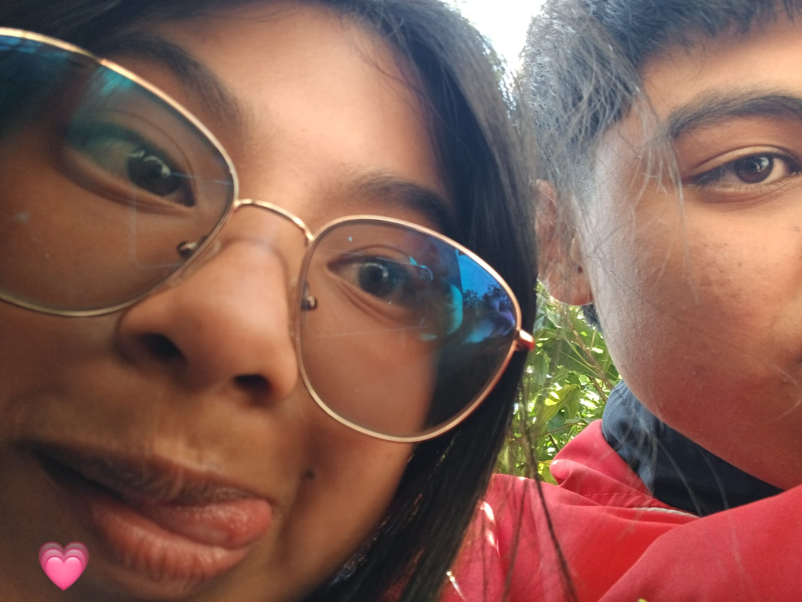

eres la persona más bonita que he conocido, me siento muy feliz de estar contigo
y agradecida de que tú me dejes formar parte de tu vida,también estoy completamente enamorada de ti,
me gusta cada parte de ti y de la increíble persona que eres
mi parte favorita de mi día es cuando te veo aunque sea un momento,
tal vez lo que tenga para ofrecerte no es nada a comparación de todas las cosas buenas que mereces
pero te prometo que todos los sentimientos e intenciones que tengo hacia ti son sinceros y bonitos,
prometo y espero hacerte la persona más feliz del mundo todo tiempo que decidas permanecer conmigo
voy a escucharte, apoyarte y ayudarte en cada cosa que necesites e incluso cuando no esté en mis manos

un pedacito de cielo
y eres tú"
que justifican todas las
locuras que hacen cometer"
dos lugares
aquí y en donde tú estes"
que me demuestras
no ser dificil de amar"

enamorando de ti
todos los días"
hacer mis días más
bonitos"